-
Add a mod
Drop a VPK, folder or ZIP, RAR or 7z archive onto the window. You can add loose files too, such as a lightwarp or hit sound; Eternal matches them to the game's own files.
-
Set the order
If two mods change the same file, the one higher in your list takes priority. Each mod shows which files it wins or loses, so you can see why a skin didn't appear.
-
Press Play
Eternal prepares your enabled mods before launch. It never changes game files while that game is running, and Play waits for the work to finish.
-
Take them out
Restore vanilla removes Eternal's changes from the game and keeps your library ready for next time.
Your TF2 setup,
together
Eternal brings Team Fortress 2, TF2 Classified and TF2: Gold Rush into one familiar place. Each game keeps its own mods, settings and servers. Browse GameBanana, edit screenshots, then press Play when you're ready.
Version 2.4.1 · Windows and Linux · Free and open source
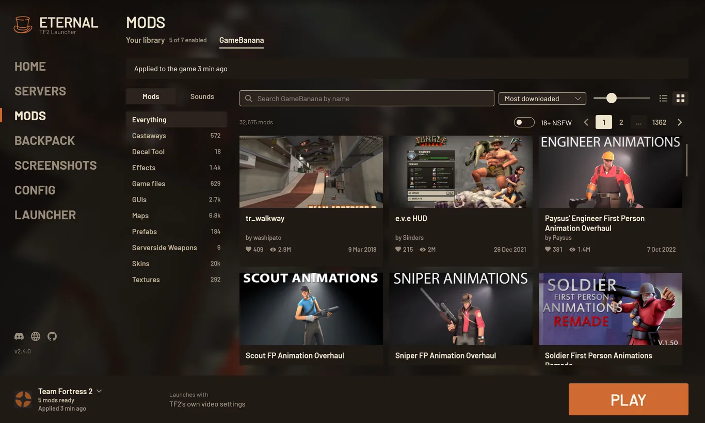
Three games, each with its own setup
Choose Team Fortress 2, TF2 Classified or TF2: Gold Rush from the menu at the lower left. The window follows your choice: mods, GameBanana, settings, profiles, servers, screenshots and news all belong to that game, along with its saved theme.
Your games stay separate, and each one only shows settings its own files support. If a game isn't installed yet, the menu links to its Steam page. Backpack prices, hit and kill sounds, and see-through weapons are available for TF2 only.
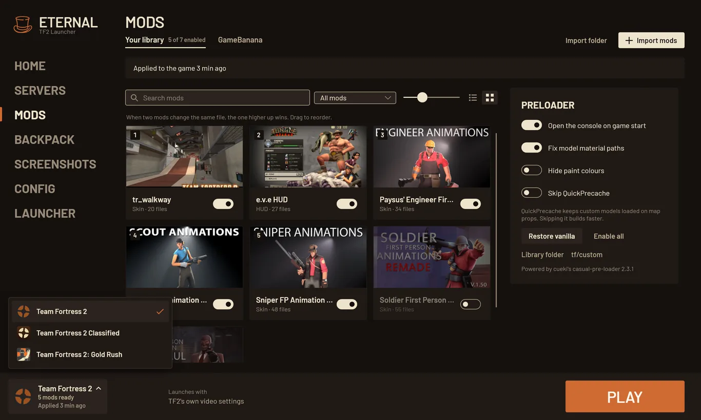
Your mods, ready when you play
Many custom files won't load in TF2 Casual on their own. Eternal includes cueki's casual-pre-loader to prepare supported mods before launch, though Valve's whitelist still decides what appears in a match.


Browse GameBanana without leaving Eternal
Search, sort and browse mods and sounds for your selected game, then choose what to install.

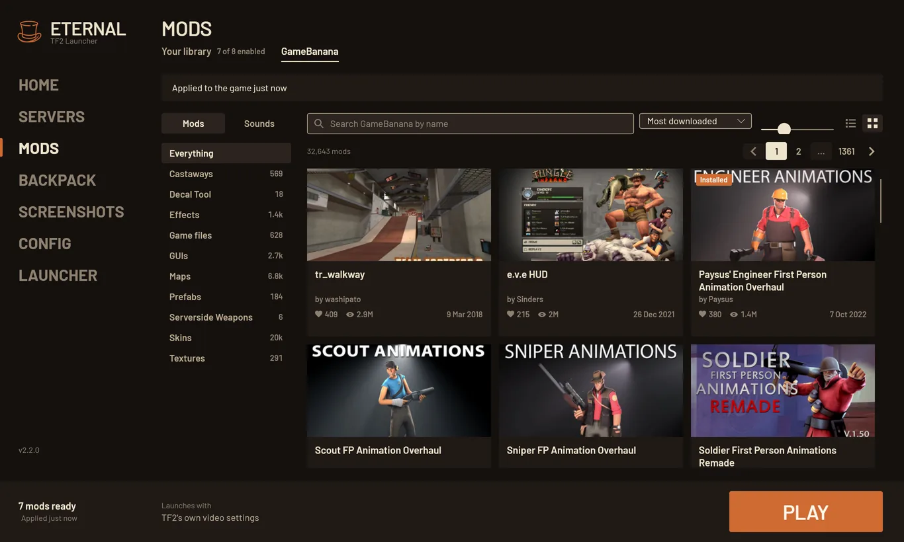
- Choose what to download
- Some uploads offer separate files, such as standard and high-quality versions. Pick the ones you want before the download starts.
- Checked before download
- Downloads come from gamebanana.com. Eternal checks the listed size and checksum, and skips files GameBanana flagged or hasn't finished scanning.
- Pick a version
- An archive may include alternatives, like 54 and 70 FOV builds. Choose what you want; Eternal flags versions that replace the same files.
- 18+ uploads stay hidden
- Turn on the 18+ setting to see adult-marked submissions. They'll carry an 18+ badge.
- Listen or watch
- Sound previews play in Eternal, one at a time. Video links open in your browser.

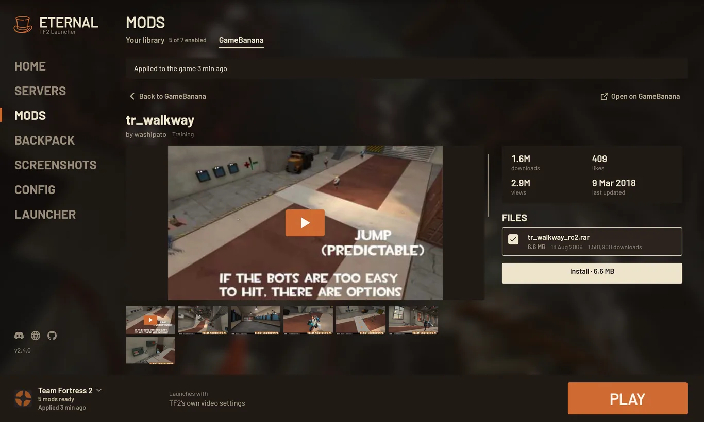

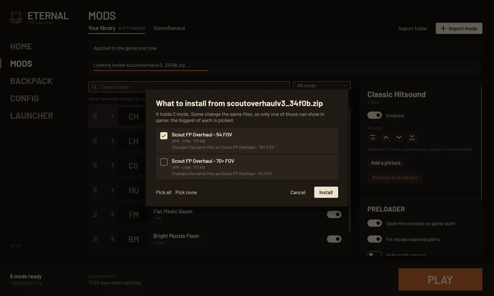
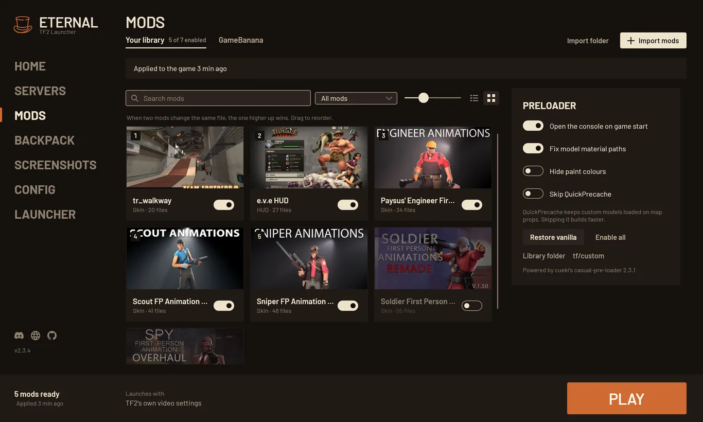
Find and join a server
Browse community servers for the game you selected, with each listing's map, players and ping. Double-click to join. If the game isn't running, Eternal starts it with your setup and joins for you.

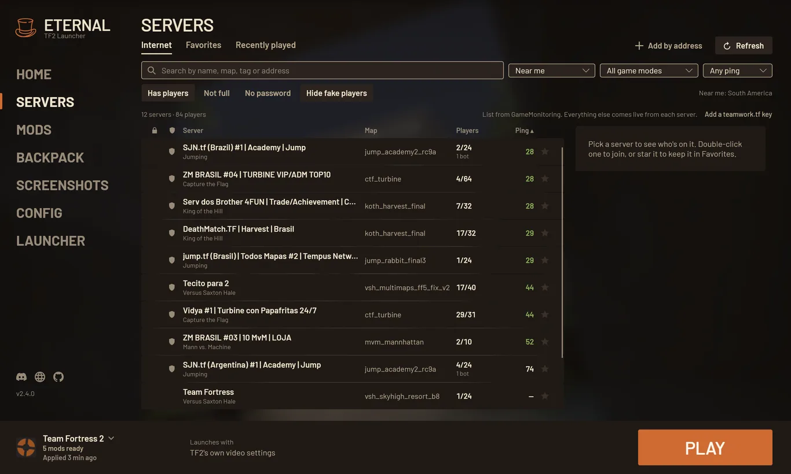
- Spot fake player counts
- Some servers show more players than their own list contains. Eternal flags them and hides them unless you choose to see them.
- A more useful ping
- Some servers reply through a nearby relay. Eternal estimates the ping from the relay's distance instead of showing its artificially low number.
- Favorites stay with the game
- Each game keeps its own favorites and history, just as it does in Steam.
- One list per game
- Switch to Classified or Gold Rush to see that game's servers, favorites and history.
- Wait for a free slot
- If a server is full, Eternal can keep checking for up to ten minutes and join when a slot opens.
- Nearby or worldwide
- Choose Near me for local servers or Everywhere to search across regions.
Eternal combines GameMonitoring's listings with Steam's server list for TF2. Add a teamwork.tf API key in Settings to include its community lists.
Settings that make sense
Each setting explains what it changes, its default and any effect on frame rate. Leave it alone and the game keeps its own value.
- Set a bind by pressing a key
- Choose a bind, press a key, mouse button or scroll wheel, then enter the command.
- Start with a profile
- Choose Competitive, Max Performance, Max Quality or Balanced, then adjust it or make your own.
- Share your setup
- Send a short code or a file. Before import, review its launch options and binds; shared autoexec lines replace yours only if you agree. A file can also include mods that aren't on GameBanana.
- See-through weapons
- In TF2, make viewmodels transparent with one switch. Eternal adds what it needs alongside your HUD without editing it.
- Search the way you think
- Search by a setting's name or cvar, such as “field of view” or “viewmodel_fov”.
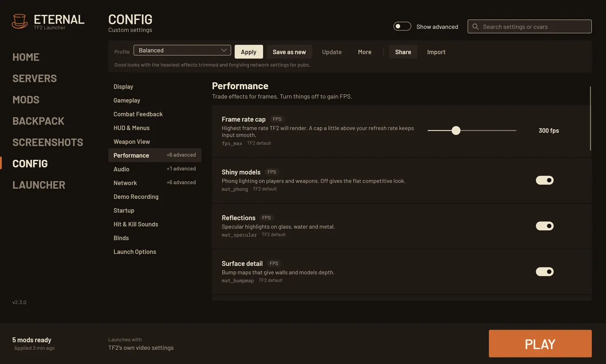
Your autoexec stays yours
Eternal writes only the settings you change, in one marked block at the end of autoexec.cfg. The rest stays as you wrote it, and a backup is kept. If you leave every setting alone, Eternal doesn't write to the file.
Here's what that block can look like after changing a few settings and adding a voice bind:
// === ETERNAL LAUNCHER MANAGED BLOCK — do not edit between these markers ===
// Gameplay
fov_desired 90
hud_fastswitch 1
// Combat Feedback
hud_combattext 1
// Weapon View
viewmodel_fov 70
// Binds
bind "f" "voicemenu 0 0"
// === ETERNAL LAUNCHER MANAGED BLOCK END ===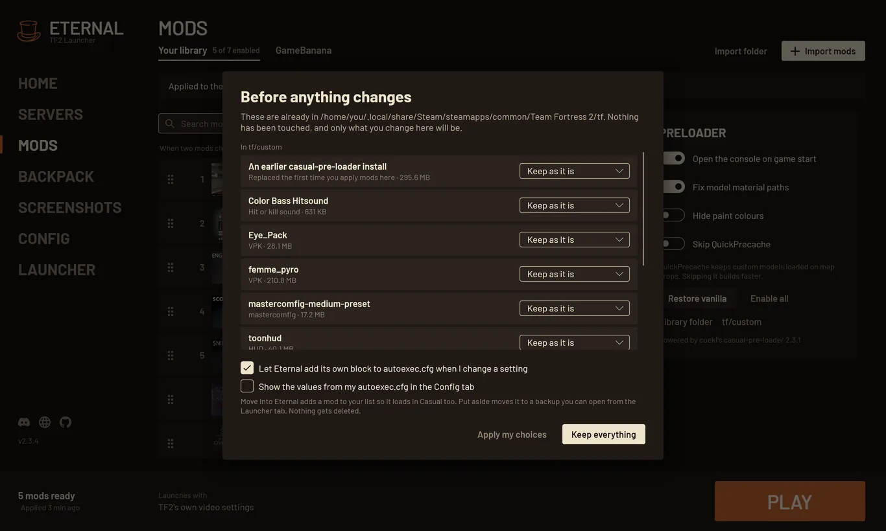
Your files stay yours
The first time you open a game, Eternal checks its custom and cfg folders and shows you the files it finds, from VPKs and HUDs to mastercomfig and your own configs. Nothing changes until you choose what to do.
Keep files where they are, import a mod into your library or move it to a backup folder. Eternal doesn't delete them.
Make hit and kill sounds yours
Choose an audio file or a folder of sounds. Eternal converts them to TF2's format, trims silence at the start and prepares them for Casual.
Add several and TF2 picks one at random for each hit or kill. Eternal matches each sound to TF2's usual volume. Adjust it with its own slider, and preview it at the same level you'll hear in game.
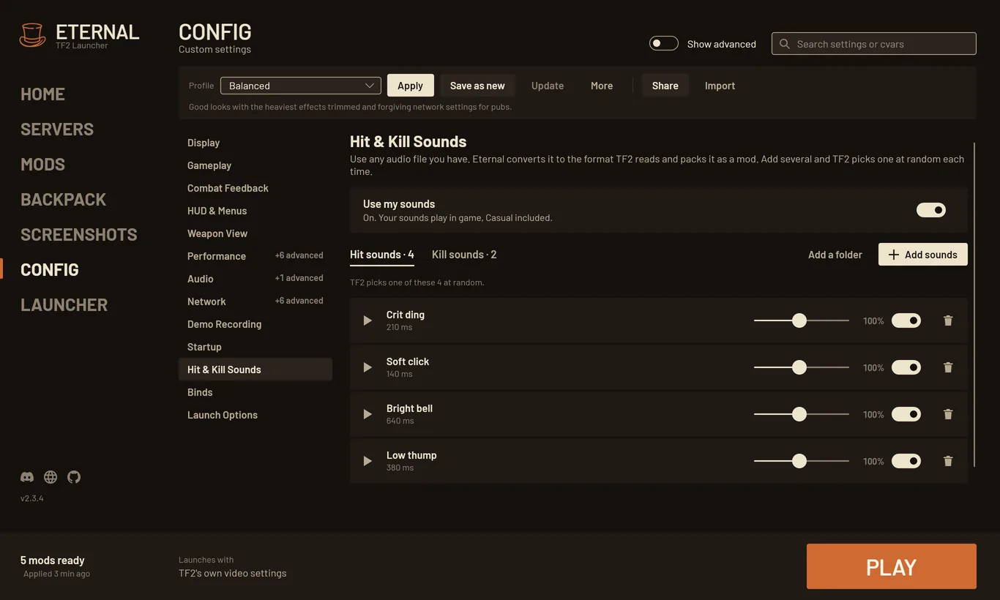
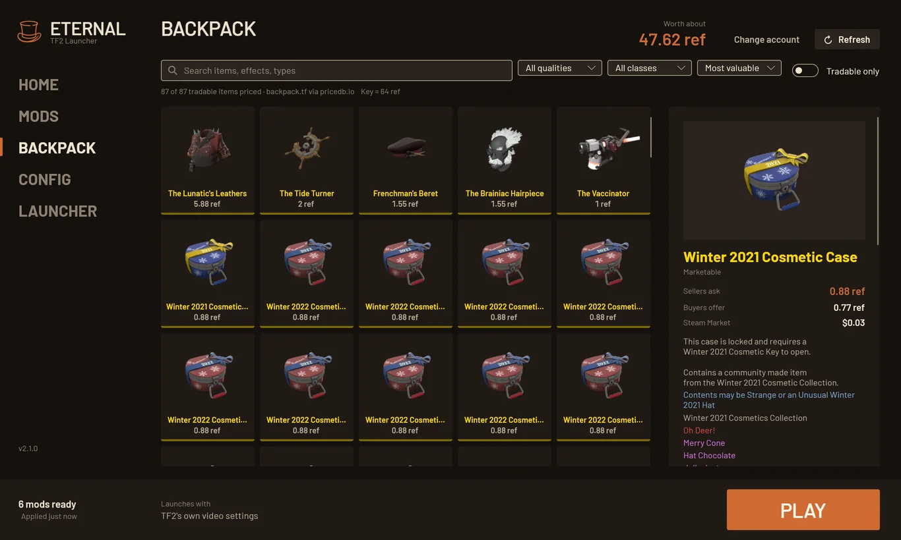
Know what your backpack is worth
See your public TF2 inventory with backpack.tf prices from pricedb.io, shown in keys and refined.
Select an item to compare seller prices, buyer offers and its Steam Market price in your currency. Sort by value or filter by quality, class and tradability.
Renamed items show their new name, original name and custom description. Add your Steam Web API key to see decals on items that have them.
Your screenshots
Browse the screenshots Steam saves for each game. Crop or rotate one, blur names, adjust the light, add text, arrows or another picture, then copy it or post it to your Steam profile.
Move, resize and rotate anything you add, or set its exact values in the side panel. You can also use a screenshot as Eternal's background.
Save your edits over the screenshot Steam uses for uploads; the original stays available with Revert. Once Steam uploads it, use Copy link to open its Steam Community page.
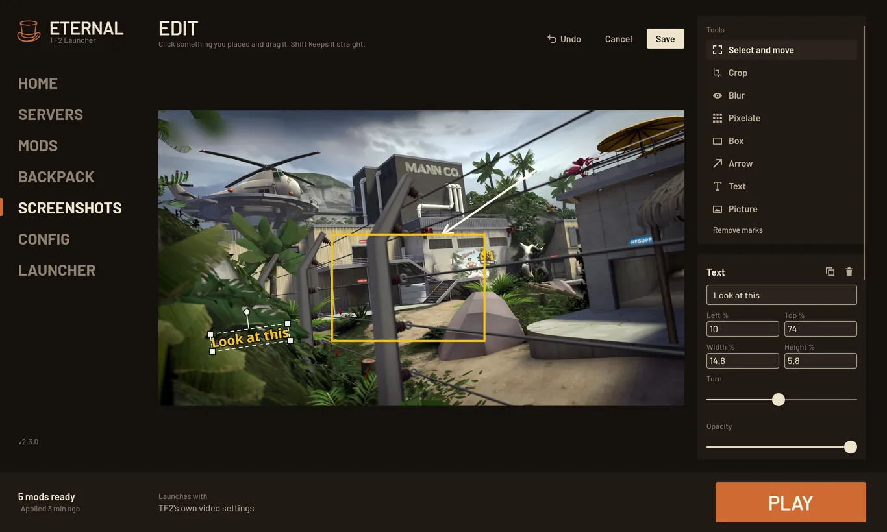
Make it feel like yours
Choose from eight themes and set an accent color; the hat icon follows it. Use TF2 screenshots as a background: choose one, let Eternal pick at random or start a slideshow. You can also make the interface larger or smaller.
Install Eternal
The Windows and Linux downloads include what they need. You don't have to install .NET or Python first.
Upgrading from version 1? Your settings, profiles and mod library carry over the first time you open Eternal.
Eternal downloads updates in the background and installs them when you quit. Choose Restart to update if you want to install one right away, or turn automatic updates off in Settings.
Download 2.4.1Windows
- Run EternalLauncher-2.4.1-win-x64-setup.exeno admin rights needed
- Or unzip the portable build anywheredata stays beside it
Linux
tar xf EternalLauncher-2.4.1-linux-x64.tar.gzcd EternalLauncher && ./install.shadds a menu entry- Install Wine for custom props, robots, pickups and flagsoptional
- To uninstall:
./install.sh --removekeeps your settings
Choose a game, set it up, press Play
Questions
Which games can I use? Team Fortress 2, TF2 Classified and TF2: Gold Rush. Switch games from the lower-left menu; each keeps its own mods, settings, profiles and servers. Backpack prices, hit and kill sounds, and see-through weapons are TF2-only.
Will my mods show up in Casual? Many visual mods work, including particles, skins, war paints, map textures, props and HUDs, but Valve's whitelist still applies. Full player-model replacements may be reset by the server. Eternal flags known problem models before you launch.
Are GameBanana downloads checked? Eternal only downloads from gamebanana.com, checks each file's size and checksum, and requires a passed GameBanana virus scan. These are still community uploads, so choose what you trust.
Does Eternal patch the game? No. It doesn't change the game's code or memory. It prepares mod files in the selected game's custom folder and writes only its own marked block to autoexec.cfg.
Can I start a game from Steam? Yes. Copy the launch line shown in Config → Launch Options into Steam's launch options for that game.
Where are my mods stored? Your library stays in Eternal's data folder. Enabled mods are packed into the game's custom folder before launch; Restore vanilla removes those game files but keeps your library.
Is Eternal free? Yes. It's free, open source under the MIT license, and doesn't need an account.
Need a hand? Visit the Discord server for help and release news.
Found a bug? Open an issue on GitHub and attach your logs. On Linux, find them in ~/.local/share/eternal-launcher/logs. On Windows, look in %LOCALAPPDATA%\Eternal TF2 Launcher\logs.
Casual mod support, thanks to cueki
TF2 Casual mod support comes from cueki's casual-pre-loader, which Eternal bundles unchanged. Eternal brings it together with your settings, servers, GameBanana and the rest of your setup. If you only need the preloader, get it from the original project.
Thanks to backpack.tf and pricedb.io for prices, GameBanana and its creators for their work, Deadlock Mod Manager for ideas on recovery and file conflicts, and Jeremy Tribby for the Barlow typeface.
casual-pre-loader on GitHub